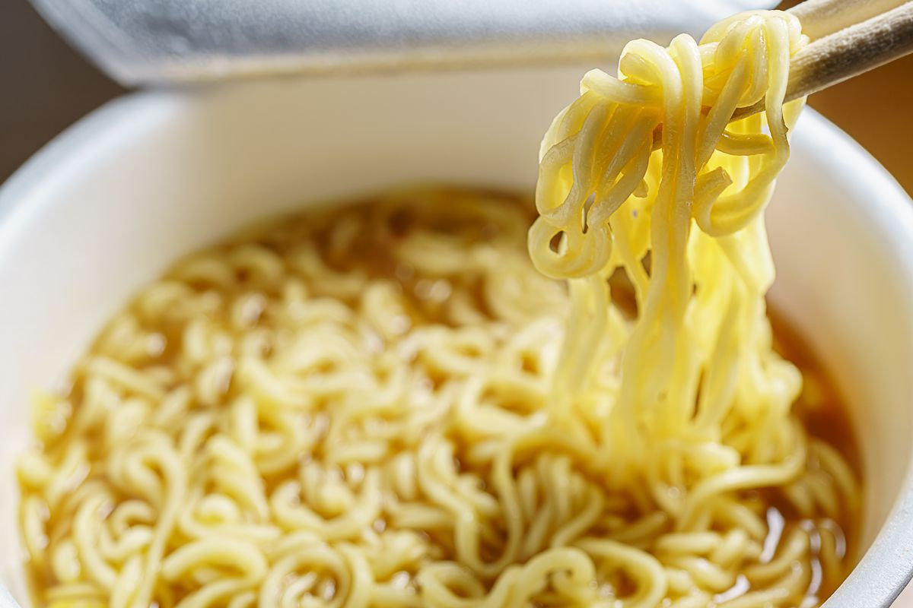

Instant Ramen

Ingredients:
- Instant noodles
- Flavouring/broth packet (included)
- Low expectations
Preparation:
- Further lower your expectations
- Boil water
- Place noodle brick in heat-safe container
- Pour boiled water over noodle brick until noodle brick is satisfactoraly submerged
- Wait however long you feel in your soul is right
- Empty contents of flavouring/broth packet into broth
- Stir
- Do not enjoy (or do, I'm not one to judge (I am, this is a threat))